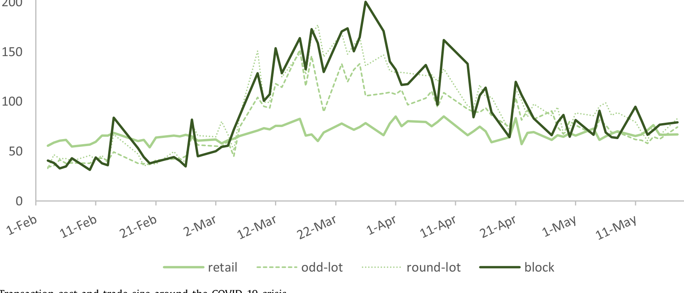
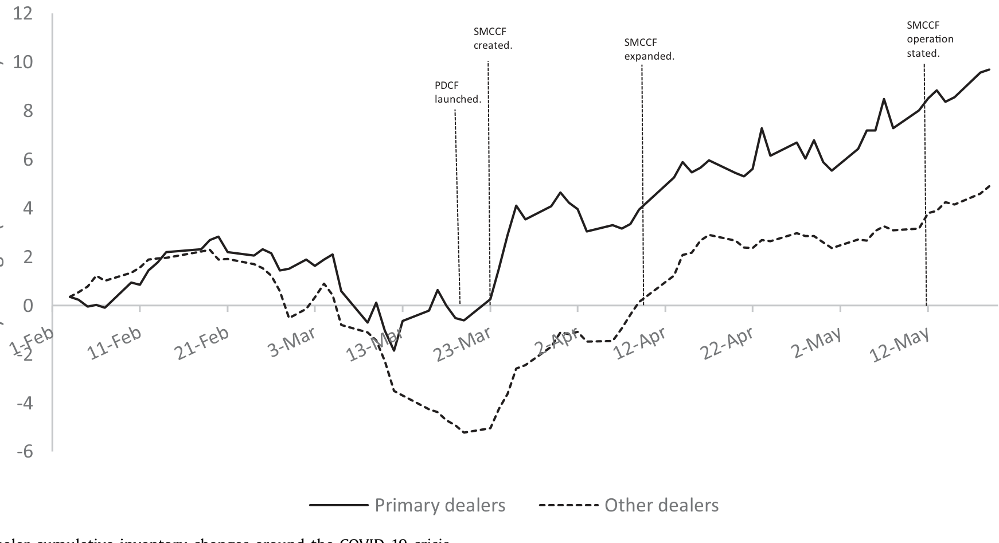
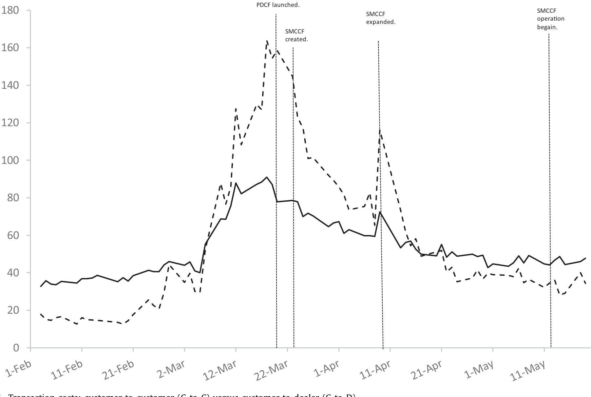
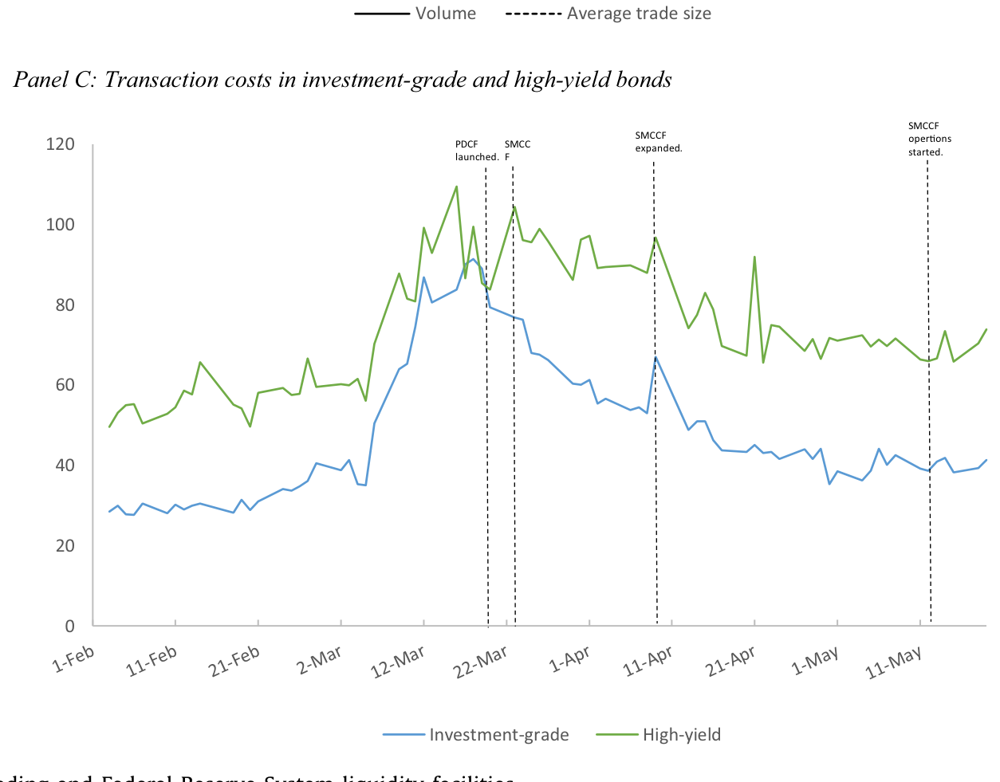
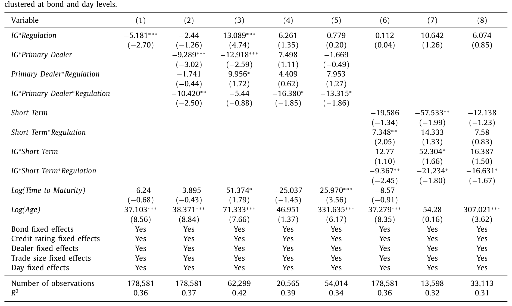
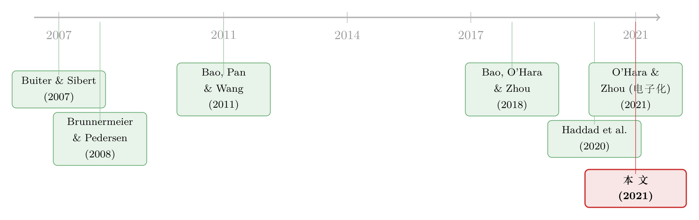

差点死掉的那个市场：一场公司债流动性危机的微观解剖
本文读的是 O'Hara & Zhou (2021, Journal of Financial Economics)：2020 年 3 月，美国公司债市场在两周内几近停摆——交易成本飙到 90 bps 以上、大宗交易的「批发折扣」反转成「批发溢价」、交易商集体从买方变成卖方，把存货砸出累计 −80 亿美元的窟窿；而真正把市场拉回来的，不是美联储买的某一张债券（事实上在样本期内它一张都没买），而是它「愿意买」这个承诺本身。作者由此提出：美联储扮演了一个新角色——最后做市商（market maker of last resort）。
1 引言：一个差点被 COVID 杀死的市场
2020 年 3 月，全世界都在盯着股市的熔断。但在金融体系更深的地方，一个平时几乎没人讨论、规模却高达 8.8 万亿美元 的市场，正在悄无声息地走向窒息——那就是美国公司债市场。
这本不该发生。公司债是机构投资者的压舱石，是养老金、保险公司、债券基金的「稳健资产」。可在那两周里，它的稳健荡然无存：收益率利差暴涨，流动性仿佛一夜蒸发。一个自然的疑问是：到底发生了什么？是大家突然觉得这些公司要违约了（基本面/风险定价的故事），还是市场的「管道」本身堵住了（流动性的故事）？
O'Hara 和 Zhou 这篇论文给出的答案，是后者。而且他们不满足于说「流动性枯竭了」这种笼统判断——他们要做的是一台微观解剖：把这场危机一层层切开，看清楚到底是谁、在什么时候、因为什么，停止了向市场提供流动性；又是美联储的哪一个动作、通过什么渠道，把它救了回来。
这正是这篇文章最迷人的地方。它不是一篇「美联储救市有效吗」的宏观评估，而是一份贴着交易记录写出来的病理报告。
2 先看清「病灶」：成本飙升与一次诡异的「价格反转」
要解剖，先得有手术刀。作者用的刀，是交易成本（transaction cost）——即投资者完成一笔买卖，相对于债券「公允价」要付出的价差，以基点（basis points, bps）计。这是衡量公司债流动性最直接的尺子。
首先，是总量上的恶化。市场在 3 月 6 日 之后急转直下：平均交易成本一路飙升，在美联储出手前夕冲到 90 bps 以上，几乎是 2 月初水平的三倍。
但真正反直觉的，是交易规模的定价反转。在正常时期，公司债市场和零售业一个道理：买得越多越便宜。大宗交易（block trade）因为对交易商更「值钱」、信息含量更高，成本通常比零星小单（micro lot）低——投资级（investment-grade, IG）债券里，大宗交易成本一度比小单低约 10 bps。可危机一来，这个秩序整个翻了过来：IG 大宗交易成本从 2 月的 24 bps，在 3 月 23 日 暴涨到 150 bps 以上；大宗与小单的价差，从「低 10 bps」变成了「高 60 bps 以上」。

Figure 3: Transaction cost and trade size around the COVID-19 crisis
换句话说，谁手里的债券越多、越急着出手，谁就被宰得越狠。「批发折扣」变成了「批发溢价」。高收益（high-yield, HY）债券里也是同样的剧情。这是一个典型的危机信号——当大额头寸成为烫手山芋，说明市场上已经没有人愿意、或有能力去接下大单了。
接着，一个自然的问题是：既然成本这么高，交易都跑到哪里去了？作者发现，交易向「平时就更流动」的债券集中。当流动性开始蒸发，投资者本能地逃向那些他们觉得还能卖得掉的券——这与债券基金被赎回、被迫「火线甩卖（fire sales）」的图景高度吻合（关于基金净值与赎回如何把脆弱性写进债市，可参见《基金越难脱手，它手里的债券越「抖」》）。
3 谁停止了供血？——交易商从「买」转向「卖」
成本飙升只是症状。病根在供给侧：谁本该提供流动性，却撒手了？
公司债主要在场外（over-the-counter, OTC）的交易商市场成交。约 600 家交易商在 2020 年一季度做着中介，但最大的 10 家就控制了约 70% 的成交量，其中大多是银行系交易商。更关键的是其中 24 家一级交易商（primary dealers）——它们是纽约联储执行货币政策的交易对手。
交易商的角色，本是「逆向接盘」：有人想卖时买进，有人想买时卖出，用自己的资产负债表暂时承接失衡的订单流。可这一次，作者用 FINRA 提供的监管版 TRACE 数据（这是本文的杀手锏——它带有每一笔交易的交易商身份信息）追踪下来，发现了一个令人不安的转向：交易商，尤其是非一级交易商，从净买入债券转为净卖出债券。
这意味着什么？意味着本该当「减震器」的人，反而踩了一脚油门。交易商不再吸收抛压，反而加入抛售，把累计存货砸出了一个 −80 亿美元 的窟窿。而且作者还发现：被交易商越是激进抛售的债券，其交易成本上升得越多——存货的负向变动，直接喂大了流动性危机。

Figure 4: Dealer cumulative inventory changes around the COVID-19 crisis
为什么交易商会「叛逃」？因为他们自己也被卡住了。一方面，部分交易商触到了资产负债表的容量上限；另一方面，回购（repo）融资需求激增，融资成本（funding cost）急剧上升。这恰好印证了 Brunnermeier 和 Pedersen (2008) 的经典命题：一个交易者提供市场流动性（market liquidity）的能力，取决于它自身的融资流动性（funding liquidity）。当融资这根弦绷断，做市能力随之崩塌。（交易商在风险约束下如何收缩做市，亦可参见《无风险市场里的风险厌恶》。）
4 那客户之间能互相救济吗？——一条昂贵的死路
然后，一个抱有希望的人会问：交易商不行了，但现在不是有电子交易平台吗？买方机构可以绕开交易商，直接彼此成交——所谓客户对客户（customer-to-customer, C-to-C）交易。这会不会是危机里的「新型供血管道」？
这是本文相较其他 COVID 债市研究最独到的一块。作者的回答是：管道是有的，但它又窄又贵，救不了急。
C-to-C 交易量确实在涨——危机中几乎是危机前的三倍。但绝对体量仍然很小，相对于整个市场杯水车薪。更要命的是定价：在危机前，C-to-C 的成本本来是低于 C-to-D（客户对交易商）的；可危机一来，C-to-C 成本翻了一倍多，反超 C-to-D。而且 C-to-C 的成交规模也远小于 C-to-D。

Figure 6: Transaction costs: customer-to-customer (C-to-C) versus customer-to-dealer (C-to-D)
这就把希望浇灭了：从其他客户那里找流动性，在危机里成了一条又贵又窄的路。这与作者另一篇关于电子债券交易在压力期不稳健的发现一脉相承（O'Hara and Zhou, 2021）。于是结论冷峻而清晰：交易商不愿提供流动性，客户之间也提供不起——市场自身已经没有任何力量在自我修复。这正是 Buiter 和 Sibert (2007) 所描述的那种「失序市场」：没有一个既有知识、又有深口袋的做市商，能可信地同时挂出买价和卖价。
按这两位作者的逻辑，这种危机的解药只有一个：中央银行充当最后做市商——要么直接买入资产，要么愿意以这些资产为抵押放款。而接下来发生的，正是这句话的现实版。
5 美联储做了什么：两件工具，PDCF 与 SMCCF
美联储的反应快得惊人。针对公司债市场，最相关的是两件工具：
- 一级交易商信贷便利（Primary Dealer Credit Facility, PDCF）：向一级交易商提供期限最长 90 天的融资，抵押品可以是投资级公司债等。
3 月 17 日（周二）宣布，3 月 20 日（周五）开始放款。它的逻辑是供给侧的——通过改善交易商的融资条件，恢复它们的做市能力。 - 二级市场公司信贷便利（Secondary Market Corporate Credit Facility, SMCCF）：
3 月 23 日（周一）宣布——这是美联储历史上第一次直接下场买公司债。它通过一个特殊目的实体（SPV）购买合格债券，财政部出资100 亿美元股本，以10:1的杠杆撬动。它的逻辑是需求侧的——在抛压过大时，由央行亲自再平衡订单流。

Figure 2: Corporate bond trading and Federal Reserve System liquidity facilities
这里有一个后面识别要用到的关键细节：SMCCF 只买剩余期限 5 年及以内的债券，而 PDCF 对抵押品的期限没有要求。记住这条「5 年红线」。
效果立竿见影。PDCF 与 SMCCF 推出后一周内，债券交易成本就从超过 90 bps 的峰值回落到约 70 bps；4 月初 SMCCF 扩容后进一步下降；到 4 月底 降到约 40 bps，此后保持稳定。大宗交易成本也大幅回落，到 4 月底已与小单成本相当——那个诡异的「反转」被熨平了。
6 真正关键的一步：美联储「一张债没买」，市场却好了
但本文最精彩、也最具理论分量的发现，在这里——它是一个反转。
按常理，SMCCF 是「下场买债」的工具，效果该在它真正开始买的时候显现。可作者发现：SMCCF 对债券流动性的影响，绝大部分在它「宣布」的那一刻就实现了。事实上，在整个样本期内（截至 5 月 19 日），美联储一张公司债都没买；而 SMCCF 在 5 月 12 日 真正开始买 ETF 之后，反而没有带来债券流动性的进一步改善。
一个「宣布即见效、落地却无感」的政策，乍看是个谜。如果买债真有用，为什么真买了反而没反应？
作者给出的解释，正好落回 Buiter–Sibert 的「最后做市商」框架：SMCCF 起作用的方式，不是它买了什么，而是它承诺会买这件事本身。通过为公司债提供一个流动性后盾（liquidity backstop），SMCCF 降低了交易商面对「单边市场」的风险，也就降低了它们持有存货的风险。于是即便美联储没真出手，非一级交易商也从抛售转回了承接——一个纯粹的「公告效应（announcement effect）」。
这就是「最后做市商」的精髓：最有力的干预，往往是那个不必真正执行的可信承诺。央行不需要买下整个市场，它只需要让所有人相信「真到了山穷水尽时它会买」，私人做市商的风险计算就被改写了，市场便自己运转了起来。
而 PDCF 的效应则是另一条更「物理」的渠道：它几乎立刻让一级交易商回到了更平衡的存货头寸——这正符合「直接放款、缓解融资约束」的预期。
7 如何把 PDCF 和 SMCCF 的功劳分开？——两条聪明的识别线
到这里，一个挑剔的读者会追问：PDCF 和 SMCCF 几乎前后脚推出（3 月 20 日 vs 3 月 23 日），你怎么知道流动性的改善该记在谁头上？这是本文的识别难点，作者用了两条巧妙的「裂缝」来分离二者。
第一条裂缝：谁是合格参与者。 PDCF 只对一级交易商开放。如果改善真来自 PDCF，那么 Fed 出手后，由一级交易商居间的 IG 债券交易，其流动性改善应当更强。数据正是如此。
第二条裂缝：那条 5 年红线。 SMCCF 只买剩余期限 ≤ 5 年的债，PDCF 则不挑期限。如果改善真来自 SMCCF，那么 Fed 出手后，5 年以内的 IG 债券流动性改善应当更大。数据同样支持。这是一个准断点式的设计：以 5 年为界，恰好踩在合格与不合格的分水岭上。

Table 7
此外还有一个边角但有意思的「零结果」：4 月 9 日，SMCCF 把堕落天使（fallen angels，即被降级的债券）纳入合格范围；然而作者没有发现这一举措对堕落天使的交易成本有显著影响。HY 债券整体受益于 SMCCF 扩容，但这部分特定品种没有。
8 数据与样本
把家底交代清楚：
- 核心数据：FINRA 提供的监管版 TRACE——比公开版多了交易商身份，这是全文识别交易商行为、区分一级/非一级、识别 C-to-C 交易的命脉。债券特征来自 Mergent FISD。
- 样本期：
2020 年 2 月 1 日至5 月 19 日——一个围绕危机和 Fed 干预精心切出的窗口。 - 样本：美国公司发行的美元债，覆盖工业、金融、公用事业三大行业，至少被三大评级机构之一评级，剔除私募后共
12,323只债券、1,470家发行人。 - 观测单位：二级市场逐笔交易。
宏观背景也由一组数字钉死：固定收益基金一个月内遭遇前所未有的 12% 净流出（Ma et al., 2020）；机构优质货币市场基金（MMF）总规模两周内骤降约 30%（Li et al., 2020）。需求端的疯狂赎回，撞上供给端瘫痪的做市，才酿成了这场窒息。
9 文献脉络
这篇论文站在两条研究线的交汇处。
一条线是流动性与危机的理论。Buiter 和 Sibert (2007) 提出了「最后做市商」的概念——现代市场的危机不再是旧式的「贷款人」问题，而是「做市人缺位」问题；Brunnermeier 和 Pedersen (2008) 则把市场流动性与融资流动性拧成一股绳，为「交易商被融资卡住→撤出做市」提供了理论引擎。
另一条线是公司债市场微观结构的实证。Bao, Pan 和 Wang (2011) 量化了公司债的非流动性；金融危机后，一批研究聚焦监管（尤其是沃尔克规则）如何收缩了交易商的做市能力——Bao, O'Hara 和 Zhou (2018) 是其中代表；O'Hara, Wang 和 Zhou (2018) 研究了交易商行为与执行质量，O'Hara 和 Zhou (2021) 则刻画了债券交易的电子化演进。

到了 COVID，一批同期工作几乎同时开火：Haddad et al. (2020) 提供了关键的「证伪」证据——基本面（现金流、风险补偿）解释不了这场危机，金融摩擦才是更可能的元凶，这与本文的微观结构视角不谋而合。本文的独到之处，在于它那份带交易商身份的更丰富数据，使得对交易商个体行为、客户直接做市，以及 Fed 干预效果的「干净识别」成为可能——这是同期其他 COVID 债市研究（如 Kargar et al., 2020；Boyarchenko et al., 2020）难以企及的解剖深度。
10 评论与延伸（Q&A + 研究方向）
(a) 几个可能的疑问
Q：这是一场「流动性危机」还是「信用危机」？凭什么说是前者？
关键证据有二。其一，交易向平时更流动的债券集中、大宗交易定价反转、交易商因融资受限而撤出——这些都是「管道堵塞」而非「资产变质」的微观特征。其二，与本文呼应的 Haddad et al. (2020) 直接证伪了现金流/风险补偿等基本面解释。当然，二者并非互斥：信用担忧会放大抛压，但本文证明，危机的形成与化解主要发生在流动性供给这一层。
Q：「宣布即见效、落地却无感」会不会只是巧合，或是别的好消息同时到来？
这是最值得警惕的点。3 月下旬利好密集（CARES 法案、多项 Fed 工具齐发），公告效应很难完全归因于 SMCCF 单独一项。作者用「5 年红线」和「一级交易商」两条横截面裂缝来加固识别——如果是泛泛的市场情绪好转，不该恰好在这两条边界上出现差异性改善。但严格来说，公告效应的「净贡献量级」仍难精确切分，作者自己也承认这点。
Q：为什么 SMCCF 真买 ETF 之后，流动性反而没有进一步改善？
因为承诺一旦可信，风险就已经被重定价了。SMCCF 的作用机制是「后盾」而非「购买力」——它通过消除交易商对单边市场的恐惧来释放私人做市能力。当这种恐惧在公告日就已消散，后续真金白银的购买只是边际上的锦上添花，自然观测不到额外效果。这恰是「最后做市商」理论的预测，而非反例。
Q：C-to-C 电子交易被寄予厚望，为什么在危机里靠不住？
因为它的体量太小、且本质上仍依赖「另一端恰好有人想反向交易」。当市场单边抛售时，客户之间彼此都是卖方，缺乏天然对手盘，价格只能被推到极高（成本翻倍）才能撮合极少的成交。它在平静期是低成本的补充渠道，但在压力期无法替代交易商承接系统性失衡的能力。
Q：「批发溢价」（大宗交易成本反超小单）这个反转，最该被怎么理解？
它是「做市能力枯竭」的纯净温度计。正常时大单更便宜，是因为交易商愿意为有价值的大额订单流竞价；一旦交易商的资产负债表和融资双双吃紧，承接大额头寸的边际成本陡增，于是谁的单子越大、越急，谁被收的「流动性税」越高。这个反转的幅度（从 −10 bps 到 +60 bps）比平均成本的上升更能刻画危机的严重程度。
Q：把美联储称为「最后做市商」，与传统的「最后贷款人」有何本质区别？
最后贷款人（lender of last resort）解决的是机构的偿付/融资问题——向银行放款。最后做市商（market maker of last resort）解决的是市场的撮合问题——当买卖双方无法匹配时，由央行直接买卖资产或承诺买卖，重建价格发现。COVID 中 PDCF 扮演了前者（救交易商的融资），SMCCF 扮演了后者（救市场的撮合）。本文的贡献，正是用数据把这两种角色拆开并分别验证。
(b) 几个可能的研究问题与提案
1. 谁在制造抛压？把卖方按投资者类型拆开。
【经济故事】本文专注于流动性的供给侧（交易商、客户做市），但坦承「是什么触发了如此异常的抛压」仍待解。除了债券基金的赎回火线甩卖，保险公司、养老金的再平衡也可能是元凶（Haddad et al., 2020 已有暗示）。把每一笔卖单归因到投资者类型，能回答「这场危机的需求侧动力究竟是谁」。
【可行性】中。需要把 TRACE 与机构持仓数据（保险公司 NAIC、基金 N-PORT、13F）匹配，识别难点在于交易商居间会掩盖最终卖方身份。监管版数据 + 客户标识或可部分破解，doable 但工程量大。
2. 公告效应的「半衰期」与可信度衰减。
【经济故事】最后做市商靠的是「可信承诺」。那么一个自然的问题是：这种承诺的效力会随时间衰减吗？如果市场逐渐怀疑央行的退出意愿，后盾效应会不会打折？把多次 Fed 工具的公告事件排起来，估计每一次公告效应的强度与持续时间，能为「可信度」这一抽象概念找到价格上的刻度。
【可行性】高。事件研究框架成熟，TRACE 高频成本数据足够。识别上需控制同期其他冲击，可用 5 年红线之类的横截面裂缝做安慰剂检验。
3. 外资持有人在公司债流动性危机中的角色。
【经济故事】美国公司债有相当比例由外国投资者持有。危机中，外资是「先逃的人」还是「稳定的锚」？他们的抛售/承接行为，会不会因不受 Fed 后盾直接覆盖而表现出系统性差异？这能把「最后做市商」的边界——它能安抚谁、安抚不了谁——勾画清楚。
【可行性】中偏低。难点在于 TRACE 不直接标注投资者国籍；需借助 TIC 数据或托管行信息间接推断，识别较脆弱。但若能与某国监管持仓数据合并，则是一个有分量的题目。
4. 「5 年红线」作为断点的资产定价后果。
【经济故事】SMCCF 的 5 年期限切割，制造了一个近乎随机的「合格 vs 不合格」边界。除了流动性，它是否也在收益率/利差上留下了断点？即合格债券是否享受了一个可观测的「央行后盾溢价」？这能为「准财政购买承诺如何被定价」提供干净证据。
【可行性】高。断点回归（RDD）设计天然契合 5 年阈值，TRACE + FISD 数据齐备，是一个干净且 doable 的实证设计。
5. 当后盾撤走时，流动性会「反向跳变」吗？
【经济故事】如果流动性的改善主要来自承诺而非购买，那么当 Fed 宣布退出或缩减 SMCCF 时，是否会出现对称的「负向公告效应」？这是对「最后做市商」理论最直接的对称性检验——承诺给得起，也收得回吗？
【可行性】中。需要把样本延伸到 2021 年 SMCCF 退出期，事件研究可行；难点是退出期市场已恢复常态，效应量级可能很小、信噪比低。
11 我的判断
这篇论文的贡献是方法性的，也是概念性的。
方法上，它靠一份带交易商身份的监管版 TRACE，把一场看似笼统的「流动性枯竭」，解剖成了交易成本、交易规模反转、交易商存货转向、C-to-C 失灵这几条可量化、可追踪的具体线索。这种「贴着交易记录做病理」的功夫，是同期多数 COVID 债市研究达不到的精细度。概念上，它用一个干净的实证案例，为 Buiter–Sibert 的「最后做市商」赋予了血肉——尤其是「SMCCF 一张债没买、市场却好了」这个反转，几乎是教科书级的「可信承诺」证据。
对识别的担忧，我有两点。其一，公告效应的归因始终是软肋：3 月下旬利好太密集，作者用横截面裂缝（5 年线、一级交易商）来加固，方向性证据扎实，但「SMCCF 公告贡献了多少 bps」这个量级，恐怕难以从同期的 CARES 法案、其他 Fed 工具中干净剥离——作者自己也诚实地把这列为未尽之事。其二，需求侧仍是黑箱：全文是一部精彩的「供给侧」病理报告，但「是什么把抛压推到如此极端」只能留给后人。
后续我最想看到的，是把这台「解剖刀」对准退出期：如果流动性靠的是承诺，那么当承诺收回时，市场会不会对称地再抖一次？以及，把最终卖方按投资者类型（尤其是外资与保险公司）拆开，回答这场危机的需求侧到底是谁点的火。这两个问题，都能让「最后做市商」从一个漂亮的概念，变成一套可被反复检验的理论。
参考文献
Bao, J., Pan, J., Wang, J. (2011). The illiquidity of corporate bonds. Journal of Finance 66(3), 911–946.
Bao, J., O'Hara, M., Zhou, X. (2018). The Volcker Rule and corporate bond market making in times of stress. Journal of Financial Economics 130, 95–113.
Brunnermeier, M.K., Pedersen, L.H. (2008). Market liquidity and funding liquidity. Review of Financial Studies 22, 2201–2238.
Buiter, W., Sibert, A. (2007). The central bank as the market maker of last resort: from lender of last resort to market maker of last resort.
Haddad, V., Moreira, A., Muir, T. (2020). When selling becomes viral: disruptions in debt markets in the COVID-19 crisis and the Fed's response. University of Rochester working paper.
O'Hara, M., Wang, Y., Zhou, X. (2018). The execution quality of corporate bonds. Journal of Financial Economics 130, 308–326.
O'Hara, M., Zhou, X. (2021). The electronic evolution of corporate bond dealers. Journal of Financial Economics 140, 368–390.
O'Hara, M., Zhou, X. (2021). Anatomy of a liquidity crisis: corporate bonds in the COVID-19 crisis. Journal of Financial Economics 142, 46–68.